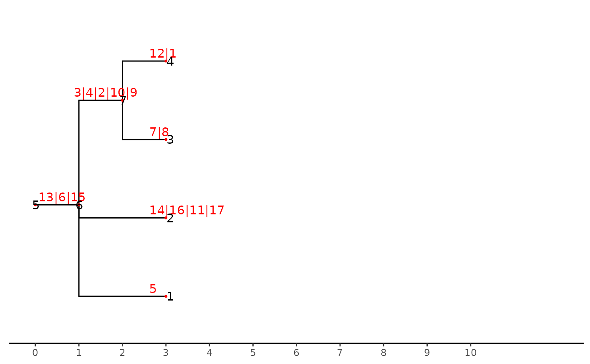

R/stackMutaionsBranch.R
stack_mutationTree.Rdstack_mutationTree is a naive function for stack mutation node in branch to node in a mutation tree of class "phylo".
stack_mutationTree(tre)a mutation tree
a tree of class "phylo"
library(ggtree)
#> ggtree v3.6.2 For help: https://yulab-smu.top/treedata-book/
#>
#> If you use the ggtree package suite in published research, please cite
#> the appropriate paper(s):
#>
#> Guangchuang Yu, David Smith, Huachen Zhu, Yi Guan, Tommy Tsan-Yuk Lam.
#> ggtree: an R package for visualization and annotation of phylogenetic
#> trees with their covariates and other associated data. Methods in
#> Ecology and Evolution. 2017, 8(1):28-36. doi:10.1111/2041-210X.12628
#>
#> Guangchuang Yu, Tommy Tsan-Yuk Lam, Huachen Zhu, Yi Guan. Two methods
#> for mapping and visualizing associated data on phylogeny using ggtree.
#> Molecular Biology and Evolution. 2018, 35(12):3041-3043.
#> doi:10.1093/molbev/msy194
#>
#> Guangchuang Yu. Data Integration, Manipulation and Visualization of
#> Phylogenetic Trees (1st edition). Chapman and Hall/CRC. 2022,
#> doi:10.1201/9781003279242
nwk_text = "((((((((((8)7,(1)12)9)10)2)4)3,5,(((17)11)16)14)15)6)13)18;"
tre <- treeio::read.newick(text = nwk_text)
ggtree(tre) +
geom_nodepoint(size = 1,color = "red",shape = 20) +
geom_nodelab(color = "red",nudge_y = 0.1)+
geom_nodelab(aes(label = node))+
geom_tippoint(size = 1,color = "red",shape = 20)+
geom_tiplab(color = "red",nudge_y = 0.1)+
geom_tiplab(aes(label = node))
stre <- stack_mutationTree(tre)
ggtree(stre)+
geom_nodepoint(size = 1,color = "red",shape = 20) +
geom_nodelab(color = "red",nudge_y = 0.1,nudge_x = -0.4)+
geom_nodelab(aes(label = node))+
geom_tippoint(size = 1,color = "red",shape = 20)+
geom_tiplab(color = "red",nudge_y = 0.1,nudge_x = -0.4)+
geom_tiplab(aes(label = node))+
theme_tree2()+
scale_x_continuous(breaks = c(0:10), limits = c(0,12))
